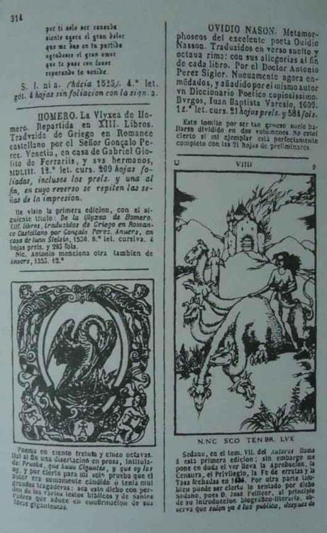

“Người chết không biết nói.”
“Họ sẽ nói nếu Thượng đế muốn,” Lagardère sửa lại.
P. Féval, THẰNG GÙ.
Người nữ thư ký gõ gót giày lộp cộp trên sàn gỗ bóng lộn. Corso theo cô ta đi qua một hành lang dài – những bức tường màu kem nhạt, những ngọn đèn ẩn kín, tiếng nhạc tan trong không gian – tới một khung cửa gỗ sồi nặng nề. Rồi ngoan ngoãn chờ ở đó. Đoạn, khi cô thư ký nở nụ cười chuyên nghiệp bước qua một bên, gã tiến vào văn phòng. Varo Borja ngồi trên ghế tựa bọc da đen nằm giữa cái bàn ăn bằng gỗ gụ chừng nửa tấn và cái ô cửa sổ với tầm nhìn hoành tráng tuyệt đẹp bao trùm cả Toledo: những mái nhà cổ xưa màu hoàng thổ, những tháp nhà thờ kiểu gô tích in bóng trên nền trời xanh trong, phía xa xa là quần thể kiến trúc cung điện Alcazar đồ sộ xám mờ.
“Ngồi đi, Corso. Khỏe chứ?”
“Ừ.”
“Anh chờ cũng lâu đấy.”
Câu này chỉ nhắc tới sự thật mà không có ý xin lỗi, Corso chau mày. “Không sao. Lần này chỉ có bốn mươi lăm phút thôi.”
Varo Borja thậm chí không buồn mỉm cười khi Corso ngồi xuống ghế bành dành cho khách. Trên bàn gần như trống không trừ cái máy điện thoại và hệ thống liên lạc nội bộ hiện đại, tinh vi. Khuôn mặt lão buôn sách phản chiếu trên mặt bàn cùng với nền phong cảnh ngoài cửa sổ. Varo Borja chừng năm mươi tuổi, đầu hói, làn da nâu sạm do tắm nắng, nom khả kính, điều khác xa thực tế. Cặp mắt nhỏ với cái nhìn sắc nhọn. Lồng ngực quá cỡ ẩn dưới cái áo gi lê bó khít đầy rẫy hoa văn và bộ veston hàng thửa. Lão là một kiểu gì đó giống như hầu tước, và quá khứ đầy sóng gió của lão được lưu trong hồ sơ cảnh sát, một vụ lừa đảo đầy tai tiếng, và bốn năm tự buộc mình sống vong đày ở Braxinl và Paraguay.
“Có cái này cho anh đây.”
Lão có cung cách cộc cằn, gần như hỗn xược, được lão trau dồi rất kỹ. Corso nhìn lão bước tới một tủ kính nhỏ, mở khóa bằng một cái chìa bé xíu nằm trên một sợi xích vàng móc trong túi ra. Lão không có tài sản công khai, ngoài một gian hàng riêng ở những hội chợ quốc tế quan trọng, và catalô của lão không bao giờ có quá vài chục đề mục. Theo dấu mỗi cuốn sách hiếm để lần đến bất cứ xó xỉnh nào trên đời, lão tranh đấu kịch liệt và không từ thủ đoạn nào để giành được nó, sau đó đem bán, kiếm bộn tiền nhờ thói đỏng đảnh của thị trường. Mỗi lần như vậy trong danh sách chi tiền của lão đều có đủ bộ: nhà sưu tập, giám tuyển, thợ khắc chữ, thợ in, và người cung cấp, như Lucas Corso.
“Anh nghĩ sao?”
Corso cầm quyển sách cẩn thận như bế một đứa bé mới đẻ. Đó là một tập sách cũ bìa bọc da nâu, có những nét trang trí bằng vàng được bảo tồn tuyệt hảo.
“La Hypnerotomachia di Polifilo[1] của Colonna,” gã nói. “Rốt cuộc ông cũng giành được nó.”
“Cách đây ba hôm. Venice, 1545. In casa di figlivolindi Aldo. Trong nhà của Aldo. Một trăm bảy mươi tranh khắc gỗ. Anh nghĩ cái gã Thụy Sĩ mà anh nhắc tới ấy còn quan tâm chứ?”
“Có lẽ. Cuốn sách hoàn hảo chứ?”
Tất nhiên. Trừ bốn bức họa được in lại theo bản năm 1499.”
“Thực ra khách hàng của tôi muốn bản in lần đầu, nhưng tôi sẽ thuyết phục ông ta bản in lần thứ hai là đủ rồi. Năm năm trước, trong cuộc đấu giá ở Monaco, ông ta để tuột tay một cuốn.”
“Vậy thì lần này anh được quyền lựa chọn.”
“Cho tôi vài tuần để tiếp cận ông ta.”
“Tôi thích bán đứt luôn,” Borja cười như một con cá mập đang bám sát sau lưng người bơi biển. “Tất nhiên anh vẫn có phần như thường lệ.”
“Đừng hòng. Gã Thụy Sĩ là khách của tôi.”
Borja cười mỉa. “Anh chẳng tin ai, đúng không? Anh như một đứa bé đòi nếm thử trước khi bú sữa mẹ nó.”
“Còn ông sẽ bán cả sữa mẹ mình chứ?”
Borja nhìn xoáy vào mắt Corso lúc này không giống chú thỏ dễ thương chút nào nữa mà giống con sói nhe hàm răng nhọn.
“Biết tôi thích gì ở anh không Corso? Cái cách anh nhẹ nhàng vào vai lính đánh thuê cho lũ chính trị gia mị dân và những kẻ lừa bịp ấy. Anh giống như những kẻ khố rách áo ôm mà Julius Caesar sợ một phép… Đêm anh ngủ có ngon không?”
“Say như chết.”
“Bảo đảm là không. Tôi lấy vài bản thảo gô tích cổ đánh cược rằng anh là loại người đêm nào cũng nhìn chăm chăm vào bóng tối… Nói với anh mấy điều được chứ? Tôi không tin vào mấy gã lẻo khoẻo luôn sẵn sàng tuân lệnh đầy nhiệt huyết. Tôi chỉ dùng những lính đánh thuê được trả lương cao, không gốc gác, thẳng thừng một là một hai là hai. Tôi nghi ngờ bất cứ kẻ nào dính dáng tới tổ ấm, gia đình, sự nghiệp gì gì đấy.”
Lão cất cuốn Polifilo vào tủ rồi cười khô khốc. “Đôi lúc tôi chẳng rõ người như anh có bạn hay không? Anh có bạn bè nào không, Corso?”
“Quỷ bắt ông đi,” Corso lạnh lùng đáp. Borja chậm rãi mỉm cười, không có vẻ gì là bị xúc phạm.
“Anh có lý. Tình bạn của anh chẳng liên quan quái gì đến tôi. Tôi chỉ trả tiền cho lòng trung thành của anh thôi. Thế là vững chắc lâu bền hơn, phải không? Lòng tự trọng nghề nghiệp khiến người làm thuê đáp ứng hợp đồng ngay cả khi nhà vua – chủ thuê y – chuồn mất, cuộc chiến đã thất bại và không còn hy vọng cứu vãn…”
Giọng lưỡi cợt nhả và khiêu khích, lão chờ Corso phản pháo. Nhưng Corso chỉ phác một cử chỉ sốt ruột, đập đập lên mặt đồng hồ. “Ông có thể gõ lại đoạn cuối vào mail gửi cho tôi,” gã nói. “Tôi không được trả tiền để cười với cái kiểu pha trò vô vị của ông.”
Borja tỏ vẻ nghĩ ngợi. Rồi gật đầu đáp lại, mặc dù vẫn còn giễu cợt. “Một lần nữa anh lại có lý, Corso. Nào, trở lại công việc thôi…” Lão nhìn quanh. “Anh còn nhớ cuốn Kiếm thuật luận cương của Astarloa không?”
“Nhớ. Cực hiếm, năm 1870. Mấy tháng trước tôi mang cho ông một cuốn.”
“Bây giờ chính khách hàng đó lại yêu cầu cuốn Académie de l’épée – Học viện kiếm thuật. Có thể anh biết?”
“Ông định nói cuốn sách hay khách hàng? Cách nói của ông quá rối rắm, đôi khi ông sáng sủa như bùn đen ấy.”
Borja phóng ra một tia mắt căm hận. “Hai ta đều không sáng sủa, Corso. Tôi muốn nói về cuốn sách.”
“Nhà xuất bản Elzevir, thế kỷ mười bảy. Khổ lớn, tranh khắc. Được coi như cuốn chuyên luận đẹp nhất về kiếm thuật. Và giá trị nhất.”
“Người mua sẵn sàng trả bất cứ giá nào.”
“Vậy tôi sẽ đi kiếm nó.”
Borja lại ngồi xuống chiếc ghế trông ra thành phố cổ tráng lệ. Hai chân bắt chéo, vẻ tự mãn, hai ngón tay cái xọc vào túi áo gi lê. Rõ ràng chuyện làm ăn của lão đang trôi chảy. Rất ít người trong số những đồng nghiệp cao cấp người Âu của Borja có nổi cái view như vậy. Nhưng Corso chẳng để ý. Những kẻ như Borja phụ thuộc vào những người như gã, cả hai đều biết thế.
Gã chỉnh lại cặp kính cong rồi nhìn chằm chặp lão già buôn sách. “Vậy phải làm sao với Polifilo?”
Borja cân nhắc giữa phản đối và chấp nhận. Ánh mắt lướt qua tủ sách rồi dừng lại ở Corso.
“Được rồi,” lão đáp giọng thiếu nhiệt tình, “anh thu xếp với tay Thụy Sĩ đi.”
Corso gật đầu, không tỏ ra chút thỏa mãn nào với thắng lợi nho nhỏ này. Thực ra tay Thụy Sĩ đâu có tồn tại, nhưng đó là việc của gã. Chẳng khó gì chuyện tìm người mua cho cuốn sách như vậy.
“Giờ thì đến Chín cánh cửa,” gã nói. Gương mặt lão bán sách lập tức sống động hẳn lên.
“Tốt. Anh nhận vụ này chứ?”
Corso đang mải cắn một cái xước măng rô trên ngón tay cái. Gã nhẹ nhàng phun nó lên mặt bàn không chút tì vết.
“Cứ tạm coi cuốn sách của ông là giả. Và một trong số còn lại là thật. Hoặc chẳng có cuốn nào là thật hết. Cả ba cuốn đều là hàng giả.”
Borja bực bội cúi xuống tìm điểm hạ cánh của cái xước măng rô bé xíu. Sau cùng lão nhặt được nó lên. “Trong trường hợp ấy,” lão đáp, “anh sẽ phải ghi nhớ và làm theo những chỉ dẫn của tôi.”
“Chỉ dẫn nào?”
“Đến lúc đó hẵng hay.”
“Không. Tôi nghĩ ông phải cho tôi biết những chỉ dẫn ngay bây giờ.” Gã nhìn lão buôn sách do dự trong một giây. Bản năng thợ săn từ trong thâm tâm khiến gã cảm nhận có gì đó không ổn. Gì đấy giống như âm thanh chối tai rất mơ hồ phát ra từ một cái máy quay đĩa hỏng.
“Chúng ta sẽ quyết khi mọi vật tiến triển,” Borja nói.
“Quyết cái gì?” Corso bắt đầu tức tối. “Một cuốn trong bộ sưu tập tư nhân, cuốn kia thuộc quỹ tài trợ xã hội. Chẳng bao giờ người ta bán đi cả. Sự thật là thế. Vai trò của tôi là tham vọng của ông trong vụ này kết thúc ở đấy. Và như tôi nói, dù chúng là thật hay giả, một khi tôi xong việc ông phải trả tiền, có thế thôi.
“Quá đơn giản,” nở nụ cười nửa miệng, lão buôn sách đáp lại.
“Cái đó còn tùy.”
“Chính thế tôi mới phải nghĩ… Còn gì đấy ông chưa chịu nói ra, đúng không?”
Borja khẽ nhấc bàn tay lên, ngắm nghía hình chiếu của nó trên mặt bàn bóng lộn. Rồi lão chậm rãi hạ nó xuống cho đến khi bàn tay và cái bóng chập vào nhau. Corso nhìn bàn tay to lông lá mang cái nhẫn vàng to xù có khắc chữ ký trên ngón út. Gã quá quen thuộc bàn tay này. Gã từng thấy nó ký những tấm séc mà tài khoản không hề tồn tại, huơ lên để tăng tính hiệu quả cho những điều dối trá, bắt tay những người đang bị phản bội. Corso vẫn nghe thấy thanh âm chối tai cảnh cáo gã. Bỗng dưng gã thấy mệt mỏi vô chừng. Chắc mình không muốn công việc đó nữa.
“E là tôi không thích việc này,” gã nói to.
Borja hẳn đã nhận ra Corso muốn gì, bởi thái độ lão thay đổi. Lão ngồi bất động, hai tay chống cằm, ánh mặt trời ngoài cửa sổ rọi vào lấp loáng trên cái đầu trọc với màu da nâu thật đẹp. Lão có vẻ đang cân đo đong đếm thứ này thứ nọ khi mắt nhìn chằm chặp vào Corso.
“Đã khi nào tôi cho anh biết vì sao tôi thành người buôn sách chưa?”
“Chưa. Mà thực ra tôi cũng đếch để ý làm gì.”
Borja bật cười rất kịch để tỏ ra là lão sẵn sàng khoan thứ cho thói bất nhã của Corso. Riêng lúc này gã được phép tự do xả cho hết nỗi niềm trong lòng.
“Tôi trả tiền để anh nghe bất cứ điều gì tôi muốn nói với anh.”
“Lần này ông chưa trả.”
Borja moi quyển séc từ trong ngăn kéo ra đặt lên bàn trong lúc Corso nhìn quanh. Bây giờ là lúc nói lời tạm biệt hoặc là ở lại chờ xem. Cũng là lúc cần được uống thứ gì đó, nhưng Borja không phải là loại chủ nhà như vậy. Corso nhún vai, cảm thấy chai gin trong túi ngọ nguậy. Thực lố bịch. Gã biết rõ mình sẽ không bỏ đi, dù lời đề nghị lão sắp đưa ra có khiến gã động lòng hay không. Borja cũng biết thế. Borja viết một con số, ký tên rồi xé tấm séc đẩy về phía Corso.
Corso chỉ liếc qua mà không đụng tới tấm séc, thở dài. “Tôi nghe đây, ông đã thuyết phục được tôi.”
Lão buôn sách không hề tỏ ra đắc thắng. Chỉ khẽ lạnh lùng gật đầu đầy tự tin, như thể vừa tiến hành một giao dịch tầm thường.
“Tôi vào nghề này thật tình cờ,” lão bắt đầu. “Một ngày nọ tôi chợt thấy mình chẳng còn xu nào, ngoài chuyện là người thừa kế duy nhất thư viện của một ông trẻ bên nội… Khoảng hai ngàn cuốn sách, trong đó chỉ chừng trăm cuốn là có ít nhiều giá trị. Nhưng trong đó có cuốn Don Quijote xuất bản lần đầu, đôi cuốn Psalter từ thế kỷ mười tám, và một trong số bốn tập Champfleuri hiếm hoi của Geoffroy Tory… Anh nghĩ sao?”
“Ông gặp may đấy.”
“Chứ còn gì nữa,” Borja tán thành, giọng đều đều, tự tin. Lão không có vẻ đắc ý lắm như kẻ thành đạt khi nhắc đến bản thân mình. “Hồi đó tôi không biết nhà sưu tập sách quý là thế nào, nhưng tôi hiểu được điểm mấu chốt: Người ta sẵn lòng trả cả núi tiền cho đồ xịn… Tôi học được nhiều điều trước đây chưa biết, ví dụ như những ghi chú cuối sách, kỹ thuật chạm nổi, trang trí hoa mỹ trên bìa sách… Tôi cũng phát hiện một đạo lý: Có những cuốn sách để bán và những cuốn sách phải giữ lại. Trở thành một nhà sưu tập sách giống như gia nhập một đạo giáo: nó là chuyện cả đời.”
“Hết sức cảm động. Giờ thì hãy cho biết tôi và cuốn Chín cánh cửa phải làm gì để phục vụ tín ngưỡng của ông.”
“Anh muốn tôi làm gì nếu anh phát hiện bản thảo của tôi là giả. Nói thật nhé: đó là đồ giả.”
“Sao ông biết?”
“Tôi tuyệt đối chắc chắn.
Corso nhăn nhó trình bày về cái gọi là chắc chắn tuyệt đối trong lĩnh vực sách hiếm. “Nó được liệt vào danh sách đồ thật cả trong Thư mục tổng hợp của Mateu lẫn trong catalô của Terral-Coy.”
“Phải,” Borja nói. “Mặc dù sách của Mateu có một sai sót nhỏ: nó công bố là có tám bức minh họa, trong khi có chín bức… Nhưng những xác nhận công khai chẳng có mấy ý nghĩa. Theo thư mục, bản in của Fargas và Ungern cũng là đồ thật.”
“Có khi cả ba cuốn đều thật.”
Borja lắc đầu. “Không thể. Biên bản xử án Torchia cho biết chắc chắn chỉ có một quyển sách được cất giấu.” Lão cười bí ẩn.
“Tôi có bằng chứng khác.”
“Là gì?”
“Không liên quan đến anh.”
“Vậy ông cần tôi làm cái gi?”
Borja đẩy ghế ra sau và đứng dậy.
“Theo tôi.”
“Tôi nói rồi,” Corso lắc đầu. “Tôi không ham chuyện này tí nào.”
“Anh nói dối. Anh cực kỳ tò mò. Anh sẽ nhận việc này dù không được trả thù lao.”
Lão nhét tấm séc vào túi áo vest rồi dẫn Corso theo cầu thang xoáy ốc lên tầng trên. Văn phòng của Borja nằm ở phần phía sau nhà lão. Đó là một ngôi nhà nhiều tầng kiểu Trung cổ nằm ở khu phố cũ của thành phố, lão đã phải trả rất nhiều tiền để sở hữu nó. Hai người theo một hành lang đi qua đại sảnh và cửa chính, rồi tới một cánh cửa lắp khóa số kiểu mới. Bên trong là một phòng rộng thênh thang sàn lát đá cẩm thạch đen, đèn chùm treo trần, cửa sổ với chấn song sắt kiểu cổ. Một cái bàn, mấy cái ghế bành da và lò sưởi lớn xây bằng đá. Trên khắp các bức tường là những ngăn tủ kính chứa đầy sách và các loại tranh in khắc đóng khung đẹp đẽ. Corso nhận ra mấy bức của Holbein và Durer.
“Phòng đẹp đấy,” gã nói. Gã chưa tới đây bao giờ. “Nhưng tôi tưởng ông cất sách trong kho dưới hầm…”
Borja dừng lại cạnh gã. “Sách này là cho tôi. Không phải để bán. Một số người sưu tầm tiểu thuyết hiệp sĩ hoặc lãng mạn. Số khác tìm kiếm Don Quijote hay những tập sách không xén mép… Còn những cuốn sách ở đây có chung một nhân vật chính: ma quỷ.”
“Tôi xem được không?”
“Đấy là lý do tôi đưa anh đến đây.”
Corso bước lên mấy bước. Những cuốn sách được đóng theo kiểu cổ, từ cuốn sách thuở sơ khai bìa bọc da cho tới những cuốn dùng da Marốc trang trí với những tấm lắc và phù điêu hoa hồng nhỏ. Gã dừng lại đột ngột trước một ngăn tủ khiến đế giày rách rít lên trên sàn đá hoa cương, cúi xuống xem nội dung: De spectris et apparitionibus của Juan Rivio, Summa Diabolica của Benedito Casiano, La haine de Santan của Pierre Crespet, Steganography của Abbot Tritemius, De Consummatione saeculi của St. Pontius… Tất cả đều cực kỳ hiếm và quý, hầu hết Corso chỉ mới thấy trong các danh mục tham khảo.
“Anh đã thấy cái gì đẹp hơn thế này chưa?” Borja nhìn sát tận mặt Corso mà hỏi. “Chẳng có gì tuyệt vời như thế, ánh ngời, vàng trên da thuộc, mặt kính đằng sau… Chưa kể kho báu ẩn tàng bên trong: những nghiên cứu và hiểu biết của bao thế kỷ. Kiến giải về những bí ẩn của vũ trụ và tâm hồn con người.” Lão khẽ nhấc cánh tay lên rồi thả xuống, đành chấp nhận mình bất lực không thể nào diễn đạt bằng lời nỗi tự hào được là chủ nhân của những thứ đó. “Tôi biết có kẻ sẵn sàng giết người vì một bộ sưu tập thế này.”
Corso gật đầu nhưng không rời mắt khỏi đám sách. “Ví dụ như chính ông,” gã đáp. “Mặc dù ông không tự ra tay. Ông sẽ sai kẻ nào đấy giết người thay mình.”
Borja cười ngạo nghễ. “Đó là ưu thế của kẻ có tiền – có thể mướn người thay mình làm chuyện bẩn thỉu. Còn mình thì vẫn trong sạch.”
Corso nhìn lão buôn sách. “Đấy là vấn đề quan điểm,” gã đáp. Gã có vẻ trầm ngâm nghĩ ngợi. “Tôi coi thường những kẻ không chịu bẩn tay. Những kẻ trong sạch.”
“Anh xem thường ai cũng mặc, giờ thì trở lại với việc chính.”
Borja bước qua những ngăn tủ chứa hàng trăm cuốn sách. “Ars Diavoli…” Lão mở cánh tủ gần nhất, lướt mấy ngón tay vuốt ve gáy những tập sách hầu như âu yếm. “Anh sẽ chẳng bao giờ gặp một bộ sưu tập thế này ở bất cứ đâu. Chúng là những cuốn hiếm nhất, chọn lọc kỹ càng nhất. Tôi mất nhiều năm mới gây dựng được bộ sưu tập này, nhưng tôi vẫn còn thiếu thứ tuyệt vời nhất.”
Lão lấy ra một cuốn sách khổ folio đóng bìa da đen theo phong cách Venice, thay cho tựa đề bên ngoài là năm dải băng nổi trên gáy sách và một biểu tượng bằng vàng ở bìa trước. Corso cầm cuốn sách rồi thận trọng mở ra. Trang in đầu tiên, tựa đề bằng tiếng Latinh DE UMBRARUM REGNI NOVEM PORTIS, Sách về chín cánh cửa của vương quốc bóng tối. Tiếp đó là dấu ấn của nhà in, địa điểm, tên và ngày tháng: Venetiae, apud Aristidem Torchiam. M.DC.LX.VI. Cum superiorum privilegio veniaque. Với đặc quyền và sự cho phép của bề trên.
Borja quan sát phản ứng của Corso.
“Nhìn cách cầm sách thì biết ngay ai là người mê sách.”
“Tôi không phải cái loại người ấy.”
“Đúng. Nhưng đôi khi anh khiến người ta quên mất anh có cái vẻ ngoài của kẻ đánh thuê. Hễ khi nào đụng đến sách, một vài cử chỉ của anh có thể khiến người khác yên lòng. Có những kẻ đụng vào sách đúng cung cách của phường tội phạm.”
Corso lật thêm vài trang. Toàn bộ văn bản bằng tiếng Latinh chữ rất đẹp in trên giấy dày và tốt, không hề chịu tác động của thời gian. Có chín tranh in cả trang tuyệt đẹp với bối cảnh thời Trung cổ. Gã ngẫu nhiên dừng lại ở một trang được đánh số V kiểu La Mã cùng một ký tự bằng cả chữ số Hy Lạp và Do Thái cổ. Dưới cùng là một từ không hoàn chỉnh hoặc được mã hóa: “FR.ST.A.” Một người đàn ông có vẻ lái buôn đang ngồi đếm tiền vàng trước một cánh cửa đóng kín, không hề biết sau lưng mình có bộ xương một tay cầm đồng hồ cát, tay kia cầm cái chĩa ba.
“Anh nghĩ sao?” Borja hỏi.
“Ông bảo nó là đồ giả, nhưng thứ này không có vẻ thế. Ông đã kiểm tra kỹ chưa?”
“Tôi đã coi toàn bộ, soi từng dấu phẩy, bằng kính lúp. Tôi thừa thời gian. Tôi mua được nó từ cách đây sáu tháng, khi người kế thừa của Gualterio Terral quyết định bán bộ sưu tập.”
Gã thợ săn sách lật thêm mấy trang. Tranh khắc tuyệt đẹp với vẻ tao nhã giản dị, huyền bí. Trong một bức khác, một thiếu nữ sắp bị viên đao phủ mặc áo giáp chém đầu, thanh gươm giơ cao.
“Tôi không nghĩ là những người thừa kế bán đồ giả,” Corso nói sau khi xem xong. “Họ có quá nhiều tiền nên chẳng thèm để ý mấy cuốn sách này đâu. Thậm chí catalô của bộ sưu tập cũng phải do sàn đấu giá Claymore soạn ra kia mà… Và tôi biết ông già Terral. Không đời nào ông ta chấp nhận một cuốn sách giả mạo.”
“Đồng ý,” Borja nói. “Và ông ta kế thừa Chín cánh cửa từ cha vợ, Don Lisardo Coy, một người sưu tầm sách cực kỳ đáng tin cậy.” Corso đặt cuốn sách lên bàn rồi lôi cuốn sổ từ trong túi áo khoác ra nói, “Ông ta mua nó từ tay một người Ý, Domenico Chiara, theo catalô của Weiss, gia đình người này sở hữu cuốn sách từ 1817…”
Borja gật đầu hài lòng. “Tôi thấy là anh đã thâm nhập vấn đề tương đối sâu rồi.”
“Tất nhiên.” Corso nhìn như thể lão vừa phát biểu một điều ngu ngốc. “Đấy là nghề của tôi.”
Borja phác một cử chỉ xoa dịu. “Tôi không nghi ngờ lòng trung thực của Terral và những người thừa kế,” lão nói rõ thêm. “Tôi cũng không nói cuốn sách không phải đồ cổ.”
“Ông đã nói nó là giả mạo.”
“Có lẽ dùng từ giả mạo là không hợp.”
“Vậy thì là gì? Cuốn sách thuộc về đúng thời đại.” Corso lại cầm cuốn sách, khẽ búng ngón tay lên những trang giấy và lắng nghe. “Ngay cả âm thanh cũng không sai.”
“Một số thứ có vẻ không đúng. Tôi không định nói về chất giấy.”
“Có lẽ là khâu in.”
“Có gì sai ở đây?”
“Tôi nghĩ là ở những khuôn in đồng. Năm 1666 không ai dùng bản khắc gỗ.”
“Đừng quên đây không phải là loại sách thông thường. Các tranh khắc mô phỏng do người làm sách kiếm được hoặc nhìn thấy đâu đó.”
“Delomelanicon… Thực sự ông tin vào nó?”
“Đừng bận tâm tôi tin cái gì. Nhưng chín bức tranh gốc trong cuốn sách không thuộc về ai hết. Theo truyền thuyết thì Lucifer, sau khi bị đánh bại và bị tống khỏi thiên đường, đã tạo ra những công pháp kỳ diệu dành cho môn đồ của lão: một cuốn tóm tắt những quyền pháp hắc ám. Một cuốn sách khủng khiếp được giữ bí mật, bị thiêu hủy nhiều lần, được bán với giá cao ghê gớm cho một vài người có đặc quyền sở hữu nó… Những bức họa này kỳ thực là mật mã của ma vương. Nếu giải nghĩa được văn bản và có những hiểu biết thích đáng, chúng có thể được dùng để triệu hồi ông hoàng của bóng đêm.”
Corso gật đầu với vẻ nghiêm trọng cố ý cường điệu. “Tôi có thể nghĩ ra cách tốt hơn để bán linh hồn.”
“Đừng đùa, chuyện này nghiêm túc hơn vẻ ngoài của nó… Anh biết nghĩa của từ Delomelanicon không?
“Tôi nghĩ vậy. Từ tiếng Hy Lạp delo nghĩa là triệu hồi. Còn melas là đen tối.”
Borja cười the thé. Lão nói với giọng hài lòng: “Tôi quên mất anh là dân đánh thuê có học. Anh có lý: để triệu hồi bóng tối, hoặc soi sáng chúng… Nhà tiên tri Daniel, Hippocratess, Flavius Josephus, Albertus Magnus và Leon III đều đề cập đến cuốn sách kỳ diệu này. Con người mới chỉ biết viết từ sáu ngàn năm trước, nhưng nghe đồn là Delomelanicon có niên kỷ gấp ba lần thế. Bản đầu tiên được nhắc đến dùng giấy cói Turis từ ba mươi ba thế kỷ trước. Thế rồi, trong khoảng thời gian từ năm thứ nhất trước Công nguyên đến năm thứ hai Công nguyên, nó được trích dẫn vài lần trong Corpus Hermeticum – Tổng tập các trước tác bí truyền. Theo Asclemandres, cuốn sách cho phép ‘đối mặt với Ánh sáng Thần thánh’. Và trong một biên bản kiểm kê không toàn vẹn ở thư viện Alexandria, trước khi nó bị phá hủy lần thứ ba và cũng là lần cuối vào năm 646, có một danh mục tham khảo đặc biệt cho chín bí ẩn kỳ diệu chứa đựng bên trong sách… Chúng ta không biết có một, một vài, hay chẳng có bản sao nào còn sót lại sau trận hỏa tai ở thư viện… Kể từ đó, dấu vết của nó lúc ẩn lúc hiện suốt tiến trình lịch sử, qua khói lửa, chiến tranh và thảm họa.
Corso có vẻ phân vân. “Bao giờ cũng thế. Mọi cuốn sách về pháp thuật đều có chung xuất xứ: từ Thoth[2] tới Nicolas Flamel[3]… Từng có khách hàng say mê thuật giả kim nhờ tôi tìm cuốn danh mục sách được Fulcanelli[4] và môn đồ của ông ta trích dẫn. Tôi không sao thuyết phục được ông ta rằng nửa cuốn cũng không còn.”
“Những cuốn này thì chắc chắn tồn tại. Nó phải tồn tại, vì Tòa án Dị giáo đã liệt nó vào danh mục sách cấm. Anh không nghĩ thế à?”
“Tôi nghĩ thế nào không quan trọng. Các luật sư không tin thân chủ mình vô tội nhưng vẫn cãi cho họ trắng án.”
“Trường hợp này cũng thế. Tôi thuê anh không phải vì anh tin mà vì anh được việc.”
Corso lật thêm mấy trang. Một bức tranh khắc đánh số I thể hiện một tòa thành có tường bao quanh nằm trên một ngọn đồi. Một kỵ sĩ kỳ quái không mang vũ khí đi hướng về tòa thành, ngón tay đặt trên môi ra dấu im lặng hay đồng lõa. Phía dưới ghi: NEM.PERV.T.QUI N.N LEG. CERT.RIT.
“Đây là một mã rút gọn nhưng có thể đoán được,” Borja giải thích. “Nemo pervenit qui non legitime certaverit.”
“Chỉ có người chiến đấu đúng cách mới giành được thắng lợi.”
“Đại khái thế. Cho đến giờ chỉ mới giải mã được một trong số chín câu đề, mà lại không mấy chắc chắn. Trong tác phẩm của Roger Bacon, chuyên gia về ma quỷ học, ma thuật và mật mã, có một câu gần giống hệt như thế. Bacon tuyên bố mình có sở hữu một cuốn Delomelanicon từng thuộc về vua Solomon trong đó có chìa khóa giúp hé lộ những bí mật khủng khiếp. Đó là một sách cuộn da dê có minh họa. Nó bị thiêu hủy năm 1350 do lệnh riêng của Giáo hoàng Innocent VI, ngài từng tuyên bố, ‘Nó chứa đựng công pháp triệu vời ác quỷ.’ Ba thế kỷ sau, ở Venice, Aristide Torchia quyết định in nó với những minh họa gốc.”
“Chúng quá đẹp,” Corso phản đối. “Không thể là bản gốc: bản gốc phải có phong cách cổ xưa hơn.”
“Đồng ý. Hẳn là Torchia đã cập nhật nó.”
Một bức tranh khác, đánh số III, vẽ một cái cầu vắt qua sông với hai tháp canh ở hai đầu. Corso ngẩng lên thấy Borja đang mỉm cười bí hiểm, giống như một nhà giả kim thuật tin tưởng vào sản phẩm trong lò luyện của mình.
“Còn một mắt xích cuối cùng,” lão buôn sách nói. “Giordano Bruno, kẻ tuẫn nạn vì theo chủ nghĩa duy lý, nhà toán học và là người đấu tranh cho thuyết Trái đất quay quanh Mặt trời…” Lão phẩy tay tỏ vẻ những thứ đó chẳng đáng gì. “Nhưng đó chỉ là một phần sự nghiệp của ông ta. Ông ta đã viết sáu mươi mốt cuốn sách và ma thuật chiếm vị trí quan trọng trong đó. Bruno có nhắc tới Delomelanicon, thậm chí còn dùng cả những từ Hy Lạp delo và melas, rồi nói thêm: ‘Có chín cánh cửa bí mật trên lộ trình của những người muốn biết.’ Ông ta còn mô tả phương pháp khiến cho Thần quang lại một lần nữa sáng lên. ‘Sic luceat Lux – Thần quang xán lạn dường này’, ông ta viết, quả là một châm ngôn.” Borja chỉ cho Corso dấu ấn của nhà in: một cái cây bị sét giáng chẻ làm đôi, một con rắn quấn quanh thân cây, và châm ngôn ở trên “mà Aristide Torchia dùng cho trang đầu của Chín cánh cửa… Anh nghĩ sao?”
“Rất hoàn hảo. Nhưng tất cả chúng cùng hướng tới một mục tiêu. Có thể gán cho một đoạn văn ý nghĩa bất kỳ, đặc biệt khi nó cổ xưa và tối nghĩa.”
“Hoặc quá cẩn trọng. Giordano Bruno quên mất quy tắc vàng để tồn tại: Scire, tacere. Biết và im lặng. Bề ngoài thì ông ta biết điều, nhưng ông ta nói quá nhiều. Ở đây còn có sự trùng lặp ngẫu nhiên: Bruno bị bắt sống trên quảng trường Hoa ở Rome vào tháng Hai năm 1600. Cũng hành trình ấy, địa điểm ấy và ngày tháng ấy, sáu mươi bảy năm sau, Aristide Torchia bị hành quyết: bị bắt ở Venice, bị tra tấn ở Rome và thiêu sống trên quảng trường Hoa vào tháng Hai năm 1667. Vào thời kỳ ấy hình phạt trên giàn thiêu rất hiếm thấy, nhưng nó lại được áp dụng để hành hình ông ta.”
“Cảm động quá,” Corso hờ hững.
Borja bực bội. “Lắm lúc tôi tự hỏi anh có còn tin vào cái gì nữa hay không.”
Corso tỏ vẻ nghĩ ngợi một thoáng rồi nhún vai. “Lâu lắm rồi, tôi có tin tưởng một số thứ. Hồi ấy tôi trẻ và tàn nhẫn. Bây giờ tôi đã bốn mươi lăm. Tôi già và tàn nhẫn.”
“Tôi cũng vậy. Nhưng vẫn còn tin vào một số thứ. Những thứ khiến cho tim tôi đập nhanh hơn.”
“Tiền?”
“Đừng đùa. Tiền là chìa khóa mở ra những điều huyền diệu. Để trả công cho anh. Và ban cho tôi thứ duy nhất tôi quý trọng trên đời: những cuốn sách này.” Lão tiến lên vài bước dọc theo dãy tủ chật cứng sách. “Chúng bộc lộ quan niệm của người viết, phản ảnh những mối quan tâm, những nghi vấn, những khát vọng, cuộc đời và cái chết của họ… Chúng là những vật sống: phải biết nuôi dưỡng và bảo vệ chúng…”
“Và lợi dụng chúng.”
“Thỉnh thoảng.”
“Nhưng cuốn này không được.”
“Phải.”
“Ông đã thử nó rồi.”
Đó là một khẳng định chứ không phải câu hỏi. Borja hằn học nhìn Corso. “Đừng ngớ ngẩn. Hãy cứ coi nó là giả mạo và kệ thế đã. Đó chính là nguyên nhân cần so sánh nó với những bản khác.”
“Tôi vẫn nghĩ không nhất thiết nó là đồ giả. Những cuốn sách thường không giống nhau ngay cả khi chúng được in một lần. Chẳng có hai cuốn sách nào giống hệt nhau. Từ lúc ra đời chúng đã mang diện mạo khác biệt. và mỗi cuốn sách trải qua đời sống khác nhau: có thể thiếu trang, thừa trang hoặc bị đổi lẫn, hoặc được đóng lại… Năm tháng trôi qua, hai cuốn sách được in trên cùng một tổ máy có thể có hình thức hoàn toàn khác biệt. Chuyện đó có thể xảy ra với cuốn sách này.”
“Vậy hãy tìm hiểu đi. Hãy điều tra Chín cánh cửa như thể nó là một tội phạm. Lần theo dấu vết, kiểm tra từng trang, từng bức họa, từng tờ giấy, bìa sách… Hãy lần theo quá khứ mà tìm hiểu xem cuốn sách của tôi từ đâu tới. Rồi lại làm đúng như thế với hai cuốn ở Sintra và Paris.”
“Sẽ rất có lợi nếu tôi biết làm sao ông biết được cuốn sách của ông là đồ giả.”
“Tôi không thể cho anh biết được. Hãy tin ở trực giác của tôi.”
“Trực giác của ông sẽ khiến ông mất nhiều tiền đấy.”
“Việc của anh là tiêu số tiền đó.”
Lão moi tờ séc trong túi ra đưa cho Corso, gã ngần ngừ lật đi lật lại nó trên tay.
“Tại sao ông trả trước cho tôi? Trước đây ông chưa làm thế bao giờ.”
“Anh sẽ phải thanh toán nhiều khoản. Thế này nghĩa là anh có thể bắt đầu.” Lão đưa gã một tệp giấy dày. “Mọi điều tôi biết về cuốn sách ở cả trong này. Có lẽ sẽ có ích cho anh.”
Corso vẫn nhìn tờ séc. “Trả trước mà thế này thì quá nhiều.”
“Anh có thể gặp một số rắc rối…”
“Ông không định nói…” nói tới đó, Corso nghe Borja hắng giọng. Cả hai đều hiểu vấn đề.
“Nếu anh phát hiện ra rằng cả ba cuốn đều là giả mạo hoặc không toàn vẹn,” Borja nói, “khi đó coi như anh xong việc và ta sẽ thanh toán.” Lão ngừng đôi chút, đưa tay xoa cái đầu hói, cười gượng gạo. “Nhưng có khi một trong số đó lại hóa ra đồ thật. Trong trường hợp đó anh sẽ có nhiều tiền hơn mặc ý tiêu pha. Bởi vì tôi muốn có nó bằng mọi giá.”
“Ông đùa.”
“Tôi có giống đang đùa không?”
“Đó là việc phi pháp.”
“Trước kia anh từng làm nhưng việc không hợp pháp.”
“Nhưng không phải loại này.”
“Sẽ không ai trả được cho anh như tôi.”
“Lấy gì để đảm bảo điều đó?”
“Tôi để anh giữ cuốn sách. Anh sẽ cần bản gốc cho công việc. Chẳng phải thế là đủ đảm bảo hay sao?”
Âm thanh choáng óc lại vang lên cảnh báo gã, Corso vẫn cầm Chín cánh cửa trong tay. Gã đặt tấm séc vào giữa giống như cái thẻ đánh dấu trang và thổi đi lớp bụi vô hình trên cuốn sách trước khi trả lại cho Borja.
“Lúc nãy ông nói có thể trả tiền cho mọi người để làm bất cứ chuyện gì. Bây giờ tự ông có thể kiểm chứng lại điều đó. Hãy tới gặp chủ nhân của mấy cuốn sách và tự mình thực hiện công việc bẩn thỉu ấy.”
Gã quay lại bước ra cửa, tự hỏi không biết sau mấy bước thì lão buôn sách sẽ nói gì đó. Ba.
“Công việc này không dành cho những người chỉ nói mồm,” Borja nói. “Nó là của những người hành động.”
Giọng lão đã thay đổi. Không còn vẻ lạnh lùng ngạo mạn và khinh thường đối với gã lính đánh thuê kia nữa. Trên tường, sau khung kính, trong bức tranh khắc của Durer, một thiên thần khẽ rung đôi cánh trong lúc đế giày của Corso nện trên sàn đá cẩm thạch đen. Bên cái tủ đầy sách, cạnh cửa sổ chấn song thông ra thánh đường, bên tất cả những gì lão có thể mua được bằng tiền, Varo Borja đứng chưng hửng, mắt hấp háy. Vẫn còn vẻ ngạo ngược, bàn tay vẫn gõ lên bìa sách một cách khinh miệt. Nhưng Lucas Corso nhận ra sự đổ vỡ trong mắt lão. Cùng nỗi sợ hãi.
Tim Corso gõ đều nhịp hài lòng khi gã yên lặng bước trở lui. Tới gần Borja, gã cầm tấm séc thò ra ngoài cuốn Chín cánh cửa. Thận trọng gấp nó lại nhét vào túi. Rồi cầm lấy cuốn sách và tập tài liệu,
“Tôi sẽ giữ liên lạc,” gã nói.
Gã nhận ra mình đã tung viên xúc xắc rồi. Rằng mình đã tiến vào ô đầu tiên của trò chơi Rắn và Thang đầy nguy hiểm song lùi lại thì đã quá muộn. Nhưng gã cảm thấy mình đang nhập cuộc. Tiếng cười khô khốc của gã vang vọng khoang cầu thang. Varo Borja sai rồi. Có những thứ không mua được bằng tiền.
NHỮNG BẬC THANG TỪ cửa chính dẫn tới sân trong có một cái giếng, hai con sư tử bằng đá Venice bị rào chắn ngăn cách với đường phố bên ngoài. Làn không khí ẩm ướt khó chịu từ sông Tagus ập tới, Corso dừng lại bên dưới vòm cuốn theo kiến trúc của người Moor ở lối vào và kéo cao cổ áo. Lần theo một phố hẹp yên tĩnh rải sỏi, gã tới một quảng trường nhỏ. Ở đây có một quán bar với những cái bàn kim loại và những cây dẻ trơ trụi nép dưới gác chuông nhà thờ. Chọn một chỗ ngồi trong sân có ánh nắng ấm áp, gã gắng sức làm nóng chân tay tê cóng. Có vẻ ổn hơn sau hai ly gin nguyên chất. Chỉ đến khi đó gã mới mở tập tài liệu về Chín cánh cửa và lần đầu tiên xem xét nó thật kỹ càng.
Một báo cáo bốn mươi hai trang đánh máy về bối cảnh lịch sử của cuốn sách, cả phiên bản được cho là gốc Delomelanicon, hay Thần chú triệu vời bóng tối, và phiên bản của Torchia Sách về chín cánh cửa của vương quốc bóng tối in ở Venice năm 1666. Có những phụ lục khác nhau bao gồm một thư mục, bản phô tô các đoạn trích văn bản cổ điển và thông tin về hai cuốn sách khác đã biết - chủ nhân của chúng, những phần đã phục chế, ngày mua, địa điểm hiện nay. Có cả bản sao biên bản phiên tòa xử Aristide Torchia, với lời khai của một nhân chứng đương thời tên là Gennaro Galeazzo, tả lại giây phút cuối cùng của ông chủ nhà in xấu số.
Hắn leo lên giàn thiêu, lặng lẽ và ngoan cố, không hề có ý định giải hòa với Thượng đế. Khi ngọn lửa bùng lên, khói bắt đầu làm hắn ngạt thở. Hắn trợn mắt gào lên khủng khiếp, rồi phó thác linh hồn cho Đức Chúa Cha. Nhiều người có mặt làm dấu thánh giá bởi khi chết hắn xin sự khoan thứ của Chúa Trời. Có người nói họ nghe thấy hắn thét gọi đất, nói cách khác là thét gọi nơi sâu thẳm trong lòng đất.
Một chiếc xe chạy ngang qua phía bên kia quảng trường rồi quặt vào góc phố dẫn tới thánh đường. Động cơ xe khựng lại một thoáng ở góc phố, tựa như người lái cố tình dừng lại trước khi tiếp tục cho xe đi. Corso không để ý, gã đang mải mê với cuốn sách. Trang đầu tiên mang nhan đề, trang hai bỏ trắng. Trang ba bắt đầu với một chữ N lớn chứa đựng một lời giới thiệu bí ẩn như sau:
Nos p.tens L.f.r, juv.te Stn. Blz.b, Lvtn, Elm, atq Ast. Rot. Ali.q, h.die ha.ems ace.t pct fo.de.is c.m.t. qui no.st; et h.ic pol.icem am.rem mul. flo.em virg.num de.us mon. hon v.lup et op. for.icab tr.d.o,.os.ta int. nos ma.et eb.iet i.li c.ra er. No.is ò.ret se.el in ano sag. sig. s.b ped. cocul.ab sa Ecl.e et no.s r.gat i.sius er.t; p.ct v.v.t an v.q fe.ix in t.a hom.et ven D:
Fa.t in inf int co.s daem.
Satanas. Belzebub. Lcfr, Elimi, Leviathan, Astaroth
Siq pos mag. diab.et daem. pri.cp dom.
Sau lời giới thiệu, mà “nguồn gốc tác giả” rất rõ ràng, đến phần văn bản. Corso đọc nhưng dòng đầu:
D.mine mag.que L.fr, te D.um m. et.pr ag.sco et pol.c.or tser.ire. a.ob.re quam.d p. vvre; et rn.io al.rum d. et js.ch.et et a.s sn.ts tq.e s.ctas e. ec.les. apstl. Et rom. et. om.i.sc.am. et o.nia ips.s.cramen. et o.nes.atio et r.g. q.ib fid. pos.nt int. rcd. p.o me; et t.bi po.lceor q.fac. qu.tqu.t m.lum pot., et atra. Ad mala p. omn. Et ab.rncio chrsm. et b.ptm et omn…
Gã nhìn lên cổng nhà thờ. Mái vòm có bức phù điêu về sự tích Ngày Phán xử Cuối cùng đã phai tàn theo mưa nắng. Bên dưới là hốc tường chia cái cổng làm đôi, từ đó ló ra khuôn mặt Thiên thần giận giữ, tay phải giơ cao hàm ý trừng phạt hơn là khoan dung, tay trái cầm quyển sách mở, và Corso không khỏi bất giác so sánh. Gã nhìn quanh ngọn tháp nhà thờ và những cao ốc bên cạnh. Mặt tiền các nhà vẫn còn mang biểu tượng của Đức Giám mục, và hắn ngẫm nghĩ, quảng trường này cũng từng là nơi chứng kiến lễ hội lửa thiêu tà ma của Tòa án Dị giáo. Dù sao thì đây cũng là Toledo. Là nơi tôi luyện những tông phái bí ẩn, nơi diễn ra những buổi lễ nhập đạo, chốn tung hoành của những kẻ vờ cải đạo. Và những tên dị giáo.
Gã uống thêm mấy ngụm gin trước khi trở lại với cuốn sách. Văn bản dưới dạng mã rút gọn tiếng Latinh kéo dài thêm một trăm năm mươi bảy trang nữa, trang sau cùng trống không. Chín trang mang những bức minh họa nổi tiếng mà theo truyền thuyết là do chính quỷ vương Lucifer sáng tạo. Trên đầu mỗi bức tranh có một chữ số Latinh, Do Thái hoặc Hy Lạp,với một câu tiếng Latinh dùng cùng loại mã rút gọn ấy. Corso kêu thêm cốc gin thứ ba rồi xem xét thật kỹ. Chúng giống như hình vẽ trên con bài Ta rô hay những tranh khắc xưa thời Trung cổ: nhà vua và tên ăn mày, ẩn sĩ, kẻ thực thi hình phạt treo cổ, cái chết, đao phủ, Ở bức họa cuối cùng là một người phụ nữ đẹp cưỡi trên lưng con rồng. Quá đẹp với một người chính giáo đức hạnh đương thời, gã nghĩ.
Gã tìm thấy một bức minh họa giống thế trên bản phô tô một trang trong cuốn Thư mục tổng hợp của Mateu. Nhưng không phải là chính nó. Corso đang giữ cuốn sách của Terral-Coy, còn theo báo cáo năm 1929 của nhà nghiên cứu Mateu, bức họa phô tô lại có xuất xứ từ một cuốn sách khác:
Torchia (Aristide), De Umbrarum Regni Novem Portis. Venetiae, apud Aristidem Torchiam. MDCLXVI. Folio. 160 trang cả bìa. 9 tranh khắc gỗ toàn trang. Thuộc loại cực hiếm. Chỉ tồn tại ba bản. Thư viện Fargas, Sintra, Ban. (xem minh họa). Thư viện Coy, Madrid, Tbn, (tranh khắc số 9 mất). Thư viện Morel, Paris, Pháp.
Thiếu bức tranh thứ chín. Corso xem lại và thấy không đúng. Có bức thứ chín ở cuốn sách trong tay gã, nguyên là của Coy, sau tới thư viện Terral-Coy và giờ là tài sản của Varo Borja. Hẳn đó là một lỗi nhà in, hoặc là sai lầm của chính Mateu. Khi Thư mục tổng hợp được xuất bản năm 1929, kỹ thuật in và phương thức phát hành chưa mấy phát triển. Nhiều học giả viết về những cuốn sách họ chỉ biết thông qua bên thứ ba. Có thể bức minh họa thất lạc thuộc một trong hai cuốn còn lại. Corso ghi chú bên lề bản phô tô. Cần kiểm tra lại.
Chuông đồng hồ đâu đó điểm ba tiếng, lũ bồ câu nháo nhác bay lên từ ngọn tháp và các mái nhà. Corso khẽ rung mình, dường như có gì đó đang đến, rất chậm. Gã sờ soạng trong túi lấy ra ít tiền. Đặt tiền lên bàn, gã đứng dậy. Hơi rượu gin khiến âm thanh và hình ảnh bên ngoài trở nên lờ mờ xa xôi, gã cảm thấy nhẹ nhõm hơn. Nhét cuốn sách và tập tư liệu vào trong túi vải, quàng túi qua vai, gã cứ đứng như thế trong vài giây ngắm nhìn Thiên thần nổi giận. Không có gì phải vội vã và muốn đầu óc thanh thản, nên gã quyết định đi bộ tới nhà ga xe lửa.
Tới khu thánh đường, gã theo một ngõ tắt xuyên qua tu viện. Vượt qua dãy ki ốt bán đồ lưu niệm, gã dừng lại một lát nhìn lên giàn giáo trống rỗng bên những bức tranh tường đang phục chế. Xung quanh vắng lặng, tiếng bước chân gã dội đi dội lại dưới mái nhà vòm. Gã tưởng như nghe thấy gì đấy phía sau. Một linh mục đến muộn giờ xưng tội.
Ra khỏi cánh cổng sắt, gã bước vào một con phố âm u hẹp đến nỗi xe cộ qua lại rất chật vật mới khỏi đụng vào tường. Khi gã rẽ phải, một chiếc xe từ đâu đó quẹo trái. Có một cột đèn giao thông với hộp đèn hình tam giác báo hiệu đường đi hẹp, khi Corso tới gần đó, chiếc xe bất ngờ tăng tốc. Gã nghe tiếng nó đang tới rất nhanh đằng sau, gã muốn quay lại nhìn nhưng thời gian chỉ đủ để xoay người nửa vòng, vừa kịp thấy một bóng đen chực chồm lên mình. Phản xạ của gã bị hơi rượu làm cho trì trệ, may sao gã vẫn để ý cột đèn tín hiệu. Corso lao tới theo bản năng và nhận ra giữa cây cột kim loại và bức tường có một khoảng hẹp an toàn. Gã lách vào giữa khe hẹp giống như người đấu bò ẩn mình sau rào cản. Chiếc xe chỉ quệt vào cánh tay gã rồi lướt đi. Nhưng cú va đập khiến gã đau nhói, hai đầu gối bủn rủn. Ngồi phệt xuống đám sỏi, gã nhìn chiếc xe biến mất trong tiếng rít của lốp xe ma sát với mặt đường.
Corso vừa đi tiếp về phía ga vừa xoa bóp cánh tay thâm tím, chốc chốc lại quay người quan sát đằng sau. Cái túi đeo với cuốn Chín cánh cửa bên trong khiến vai gã khó xoay trở. Chỉ mấy giây nhìn thoáng qua, gã tìm thấy một bức minh họa giống thế trên bản phô tô một trang trong cuốn Thư mục tổng hợp của Mateu nhưng như thế đã là đủ: lần này là chiếc Mercedes đen chứ không phải Jaguar. Cái người chỉ chút nữa thì đè bẹp Corso có nước da ngăm, để ria và có vết sẹo trên mặt. Thằng cha ở quán bar Makarova. Cũng là người đàn ông trong bộ đồng phục tài xế đọc báo bên ngoài nhà Liana Taillefer.

-----------------------
[1] La Hypnerotomachia di Polifilo: tiểu thuyết của Francesco Colonna (1433-1527), xuất bản lần đầu ở Venice năm 1499, nổi tiếng với những trang minh họa khắc gỗ điển hình vào giai đoạn đầu Phục hưng.
[2] Thoth: thần mặt trăng trong tín ngưỡng Ai Cập cổ, được coi là người sáng tạo ra những cuốn sách pháp thuật đầu tiên.
[3] Nicolas Flamel: nhà giả kim thuật người Pháp thế kỷ 14-15, được coi là tác giả của nhiều cuốn sách về những công pháp thần bí.
[4] Fulcanelli: bút danh của tác giả những cuốn sách về giả kim thuật và những bí mật của người Pháp cuối thế kỷ 19.